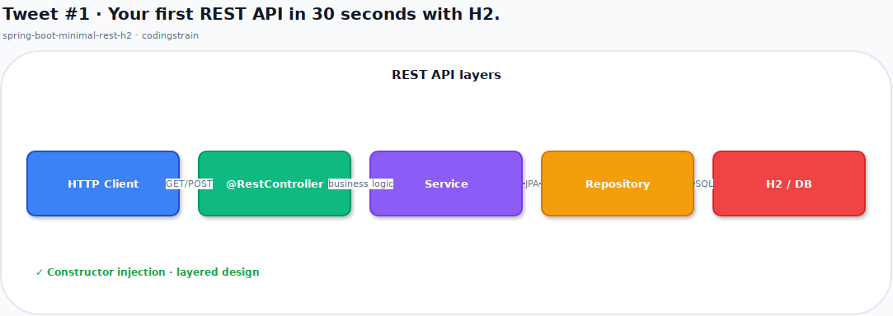

Tweet #1
Architecture — diagrams.net

Code preview
@RestController
@RequestMapping("/library")
public class BookController {
@GetMapping("/book")
public List<Book> findAll() {
return bookService.findAll();
}
@PostMapping("/book")
public Book add(@RequestBody Book book) {
return bookService.save(book);
}
}Copy for X (194/280)